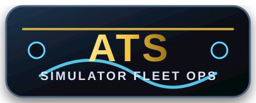

Drivers
- Login to the driver portal
- Track ELD-style clocks
- Complete DVIRs
- Upload or generate BOL records

OverWatch ELD turns American Truck Simulator driving into a complete fleet operations system with ELD-style clocks, driver status, live operations, dispatch, load records, BOL paperwork, DVIR reports, maintenance tracking, Discord-connected VTC tools, and secure driver access.
Peterbilt 389 • Trailer 53 ft Dry Van
Jacksonville, FL → Dallas, TX • 1,037 mi
No fake screenshots. No placeholder panels. This homepage now uses clean, professional feature cards and command-center styling until real screenshot files are added directly to the site.
Shows drivers exactly what matters before, during, and after every ATS trip.
Gives dispatchers and owners a fleet-wide view of what is happening now.
Brings the company workflow into one organized OverWatch system.
Lets drivers securely access their portal and stay connected to the VTC.
This section now highlights the system using real feature descriptions instead of fake screenshot mockups.
Live duty status, HOS-style timers, truck data, route progress, active loads, and driver readiness.
Assign loads, track progress, organize deliveries, and keep VTC operations moving.
Create BOLs, save records, export paperwork, and connect files to drivers, trucks, trailers, and loads.
Report defects, track service, manage repair history, and keep trucks ready for company operations.
Drivers can sign in to access their VTC portal, view company information, open assigned tools, and stay connected to the OverWatch ELD workflow. Login supports the existing email/password and Discord sign-in system.
OverWatch ELD is not just a landing page or a basic tracker. It is built around the core records and actions a serious VTC needs to run clean operations.
Tracks familiar ELD-style information for each driver session.
Uses ATS truck data so fleet records feel connected to the simulator.
Keeps each run tied to a dispatch, driver, truck, trailer, BOL, and route.
Gives drivers and managers a clean repair and inspection trail.
Drivers, trucks, roles, VTC portal records, company data, and permissions.
Assign loads, track routes, organize deliveries, and keep operations moving.
Create BOLs, save records, export paperwork, and connect files to loads.
Use a polished system to recruit drivers and make the VTC feel professional.
OverWatch ELD focuses on what makes simulator fleet management fun and useful: immersion, live operations, organized company records, driver accountability, and a polished command-center look.
Connects to ATS telemetry and records driver activity, location, trip data, truck status, and active load information.
Shows ELD-style clocks such as drive time, shift time, cycle time, break timing, and duty status changes.
Staff can create loads, assign drivers, track progress, and keep completed jobs in company history.
Creates Bill of Lading-style records with carrier, driver, truck, trailer, cargo, route, pickup, and delivery data.
Drivers can report defects while managers track repairs, service notes, maintenance state, and vehicle readiness.
Shows fleet movement, driver status, truck location, current trip, and active routes for staff and community operations.
| Unit | Driver | Status | Load |
|---|---|---|---|
| OW-389 | J. Bowers | Driving | Jacksonville → Dallas |
| OW-579 | M. Carter | Fuel Stop | Denver → Phoenix |
| OW-204 | A. Reyes | On Duty | Spokane → Reno |
| OW-117 | K. Miller | Shop | Maintenance hold |
The new copy explains what OverWatch ELD is for, what makes it different, and why drivers and VTC owners should use it: cleaner operations, better records, stronger immersion, and a more professional fleet experience.
Download the client, connect ATS, and run your VTC with driver login, logs, dispatch, live map, maintenance, documents, and fleet records.